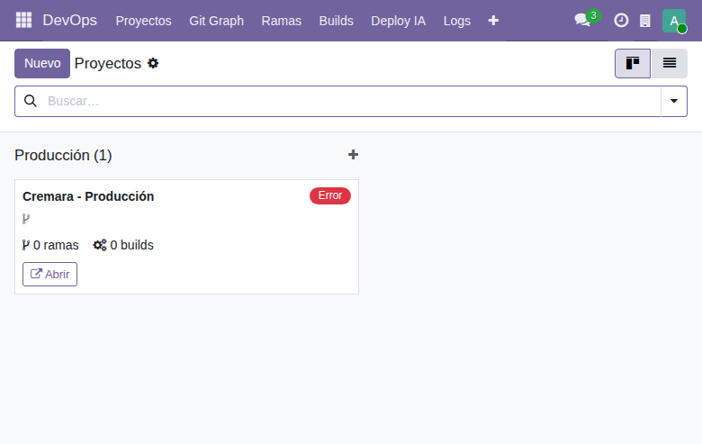
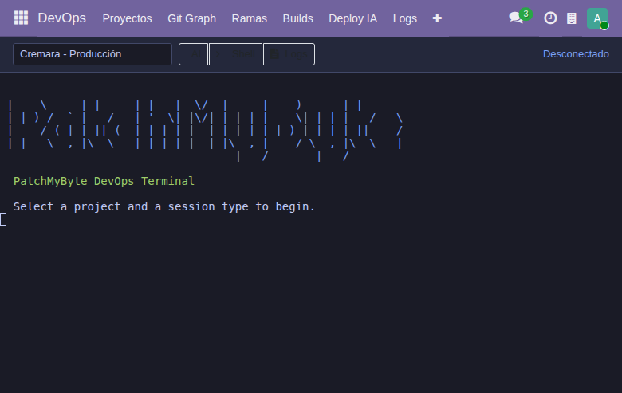
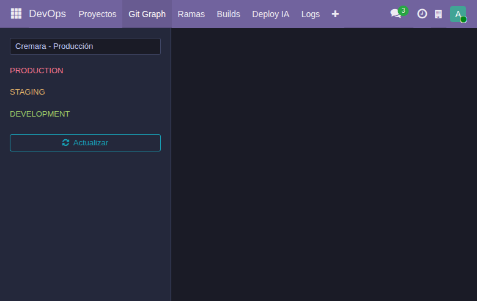

Guía completa para administrar tus instancias Odoo desde una plataforma central.
1 Inicia sesión en asistentelisto.com
2 Haz clic en el menú de hamburguesa y selecciona DevOps

Verás el dashboard de Proyectos con los submenús: Proyectos, Git Graph, Ramas, Builds, Deploy IA, Logs, Backups, Terminal, Asistente IA, Plugins y Configuración.
1 Ve a DevOps > Proyectos y haz clic en Nuevo
2 Llena los campos del formulario:
| Campo | Ejemplo (Cremara) | Descripción |
|---|---|---|
| Nombre | Cremara | Nombre del negocio/proyecto |
| Ruta del Repositorio | /opt/odoo19Test/cremara_addons | Ruta absoluta al repo Git |
| Servicio systemd | odoo19Test | Nombre del servicio (sin .service) |
| URL | https://test.cremara.com | URL de la instancia |
| Base de Datos | odoo19test | Nombre de la BD PostgreSQL |
| Entorno | Staging | Producción/Staging/Desarrollo |
| Conexión | Local | Local (mismo servidor) o SSH |
3 En la pestaña Miembros, agrega usuarios y asigna roles (Admin/Developer/Viewer)
4 Guarda el proyecto
1 Abre un proyecto y haz clic en Sincronizar Ramas
Las ramas se clasifican automáticamente como Production, Staging o Development según la configuración del proyecto.
La terminal tiene 3 pestañas:
| Tab | Función |
|---|---|
| AI | Claude Code CLI — asistente IA con acceso al código |
| Shell | Bash interactivo en el servidor |
| Logs | journalctl en tiempo real del servicio |

1 Selecciona un proyecto del dropdown
2 Haz clic en el tab deseado (AI/Shell/Logs)
Visualización de ramas con sidebar por tipo:

1 Ve a DevOps > Backups para ver todos los backups
2 Para crear uno manualmente, abre un proyecto y haz clic en Crear Backup
Build manual: Desde una rama, haz clic en Build (pull + restart)
Deploy con IA: Ve a Deploy IA y crea un nuevo deploy. El flujo es:
| Rol | Acceso |
|---|---|
| Superadmin | Acceso total a todos los proyectos. Deploy a producción en cualquier proyecto. |
| Admin (por proyecto) | Deploy a producción en su proyecto. Gestión completa. |
| Developer | Trabaja en staging/development. Terminal, AI, logs. NO deploy a producción. |
| Viewer | Solo lectura. Ve branches, builds, logs, backups. |
Ve a DevOps > Configuración > Ajustes para configurar:
PatchMyByte DevOps v19.0.1.0.0 — Generado automáticamente